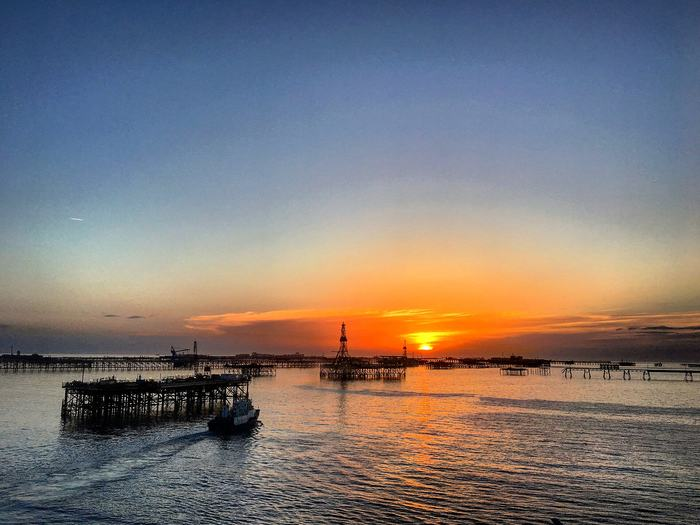

0 mSəth
Dəniz səviyyəsi
Xəzərin səthi Dünya okeanının səviyyəsindən təxminən 28 metr aşağıdadır. Yəni sahildə dayananda artıq «mənfi» hündürlükdəsən. Buradan dibə 1 025 metr yol var.
−28 mokean səviyyəsinə nəzərən
1 025 mdibə qədər
Neft Daşları yaxınlığında gün batımı